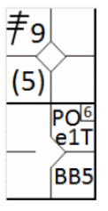
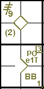
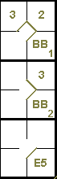
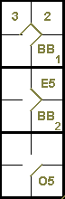

action { batter -> BB }
/* Le deuxième batteur frappe une balle vers le défenseur de troisième base. Le défenseur récupère la balle mais commet une erreur en la relayant */
action { batter -> E5T+ , runner1 -> + (2) }

Si un ou plusieurs coureurs avancent au-delà des bases qu'ils avaient légalement atteintes grâce à une erreur commise contre le frappeur ou un autre coureur, leur avance est enregistrée dans la case correspondant à la base atteinte en indiquant entre parenthèses le numéro de l'ordre de frappe du frappeur ou du coureur contre lequel l'erreur a été commise.
Exemple 31: Avec un coureur en première base, le frappeur frappe en direction de la troisième base, qui commet une erreur et laisse passer la balle. Le frappeur atteint ainsi la deuxième base et le coureur la troisième. L'arrivée du coureur en deuxième base est notée 2, sans parenthèses, puisqu'il l'a atteinte grâce à l'action (le coureur aurait atteint la base même si le lancer de la troisième base avait été parfait). Son arrivée en troisième base est notée 2 entre parenthèses, car la base a été atteinte grâce à l'erreur commise par le frappeur qui était le deuxième dans l'ordre de passage au bâton.
| WBSC | Transcription dans l'outil de scorage | Outil |
|---|---|---|
|
|
/* Le premier batteur gagne la première base sur un 'base on ball' */ action { batter -> BB } /* Le deuxième batteur frappe une balle vers le défenseur de troisième base. Le défenseur récupère la balle mais commet une erreur en la relayant */ action { batter -> E5T+ , runner1 -> + (2) } |
|
Exemple 32:
Avec un coureur en première base et un autre en troisième, le lanceur tente d'éliminer le coureur en première base, mais
rate son lancer.
Grâce à cette erreur, le coureur en troisième base marque un point et le coureur en première base avance en deuxième base.
L'avance du coureur en troisième base est comptabilisée avec le chiffre cinq entre parenthèses, car il a profité de l'erreur
du cinquième frappeur ; dans ce cas, l'arrivée du dernier coureur en deuxième base est considérée comme due à une erreur ayant
permis d'avancer d'une base supplémentaire. Pour ce coureur, on indique le numéro du frappeur au moment de l'erreur dans le coin
supérieur du carré de base.
| WBSC | Transcription dans l'outil de scorage | Outil |
|---|---|---|
|
 |
/* Le premier batteur frappe un triple dans le champ droit */ action { batter -> 3B9 } /* Le deuxième batteur arrive sur base sur un 'Base on ball' */ action { batter -> BB } /* Le lanceur tente un PickOff sur le coureur en 1, mais manque sont lancé. Le coureur en profite pour gagner la deuxième et le coureur en marque */ action { runner1 -> POe1T , runner3 -> (2) } |
 |
ATTENTION: Si une erreur décisive est commise avec deux coureurs retirés, aucune avance n'est comptabilisée sur un coup sûr, et tous les chiffres sont indiqués entre parenthèses, car si le jeu avait été correct, il y aurait eu trois retraits et personne n'aurait pu avancer. Si un défenseur commet une erreur de réception, les avances sont enregistrées entre parenthèses, à condition que le scoreur ne considère pas que le coureur aurait pu avancer si la balle avait été correctement attrapée.
Exemple 33:
Avec des coureurs en première et deuxième base et moins de deux retraits, le frappeur frappe une balle au sol vers la troisième
base, qui rate la prise, permettant ainsi à tous les coureurs d'atteindre les bases en toute sécurité. Dans ce cas, les avancées ne
sont pas notées entre parenthèses car, malgré l'erreur, on suppose que le défenseur de la troisième base n'aurait pu jouer que pour
le frappeur-coureur.
Les coureurs auraient atteint les bases en toute sécurité même avec un jeu correct.
| WBSC | Transcription dans l'outil de scorage | Outil |
|---|---|---|

|
/* Le premier batteur arrive sur base sur un 'Base on ball' */ action { batter -> BB } /* Le batteur suivant arrive sur base sur un 'Base on ball' */ action { batter -> BB , runner1 -> + } /* Le batteur suivant frappe une balle vers le défenseur de la troisième base qui commet une erreur en récupérant la balle. Les autre coureur avance sur la frappe sans tenir compte de l'erreur */ action { batter -> E5 , runner1 -> + , runner2 -> + } |
 |
Mais ....
Exemple 34: S’il est jugé que le défenseur de la troisième base aurait pu plus facilement jouer pour le coureur en deuxième base, l’action est enregistrée dans cet exemple, mais même dans ce cas, il n’y a pas de parenthèses pour le coureur en troisième base, et le frappeur-coureur est enregistré comme ayant atteint la première base sur un choix du joueur de champ.
| WBSC | Transcription dans l'outil de scorage | Outil |
|---|---|---|

|
/* Le premier batteur arrive sur base sur un 'Base on ball' */ action { batter -> BB } /* Le batteur suivant arrive sur base sur un 'Base on ball' */ action { batter -> BB , runner1 -> + } /* Le batteur suivant frappe une balle vers le défenseur de la troisième base, qui commet une erreur */ action { batter -> O5 , runner1 -> E5 , runner2 -> + } |
 |